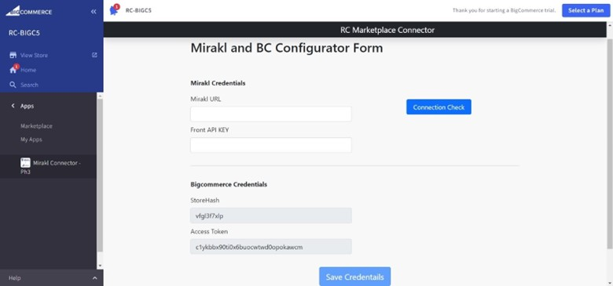
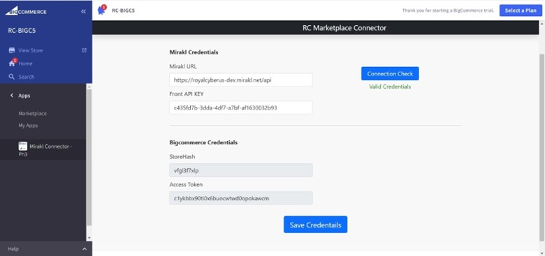
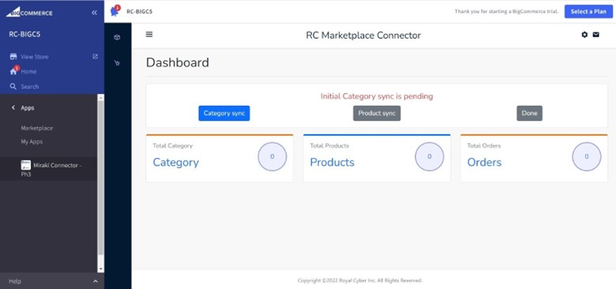
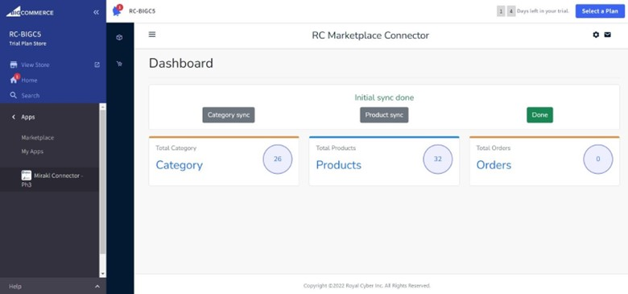
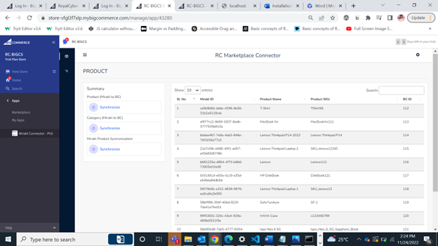
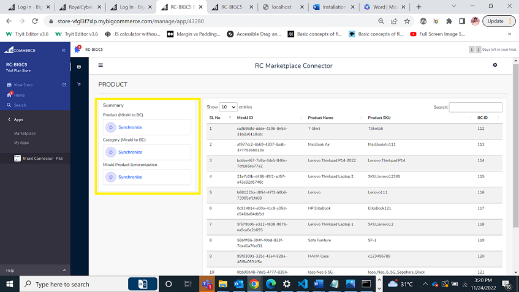
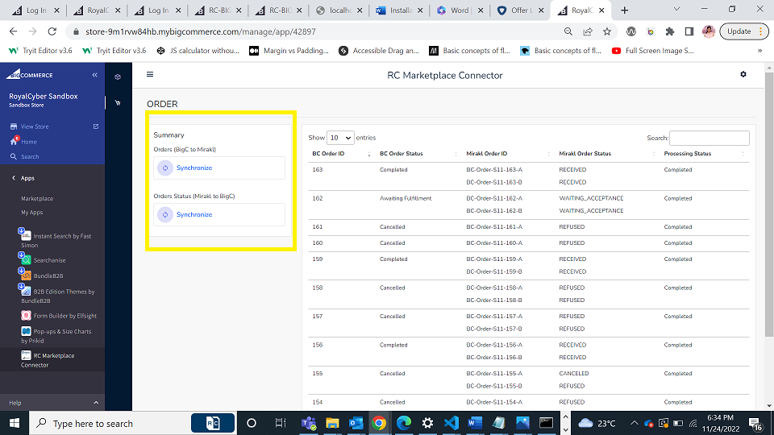

User Guide
Introduction:
The RC Marketplace Connector App helps leverage the data flow between Mirakl and BigCommerce and will help data real time sync up between different systems.
Our Connector App has smart pre-built API connection that takes the pain out of consuming custom platform integrations to handle different Seller Catalog Data like product, offers and let customers place the orders and hold unified management of products, orders etc. within the app.
Here is the step-by-step guide to manage categories, products and order sync up from Mirakl to BigCommerce store. After the app is installed, the app is ready to use.
-
Once the ‘RC Marketplace Connector’ app gets installed, you should see the ‘Mirakl and BC Configuration Form.
 -
Get the Mirakl Credentials (I.e., Mirakl API URL and Front API key) and enter the credentials in respective input boxes and click the Connection check button.
 -
Once your connection is validated successfully, then click on the Save Credentials button.
-
Once the credentials are saved you can see the App Dashboard page. RC Marketplace Connector home page provides a quick summary of categories, products and orders sync up between Mirakl and BigCommerce and you can see the total count of each category, products and orders synced between them.

Initial synchronization:
-
In your BigCommerce store you must delete all the Category and Products present in your BigCommerce store.
-
First you need to synchronize the Category from Mirakl to BigCommerce by clicking the Category Sync button and wait for complete the synchronization process. Once synchronization is completed you can see the synchronized categories in your BigCommerce Product Categories menu.
 -
Next you need to synchronize the Products from Mirakl to BigCommerce by clicking the Product sync button and wait for the synchronization process to complete. Once synchronization is completed you can see the synchronized products in your BigCommerce Product View menu
-
Once the synchronization process is done, it will show Initial Sync done like below.

Note:
- During this synchronization process please do not refresh or close the browser tab until the synchronization process is complete.
- For the synchronization process, it will take some time to synchronize based on the category and products present in your Mirakl store
User can see the following 3 sections on the app dashboard screen:
-
Category: section helps users to know total number of categories synced from Mirakl to BigCommerce. Category sync up is done initially from Mirakl to BigCommerce when the app is installed.
-
Products: section helps users to know total number of products synced from Mirakl to BigCommerce.Product sync up is done initially from Mirakl to BigCommerce when the app is installed.

When users click on the Products it will take you to the product listing page as shown in the screenshot below. -
Product listing page shows the list of products synced between Mirakl to BigCommerce.
-
In the products list table each column refers to:
• Mirakl ID:It is the unique id of product from Mirakl.
• Product Name: It is the name of the product, which is created in Mirakl, and these products are synced from Mirakl to BigCommerce with the same name.
• Product SKU:It is the SKU id of the product from Mirakl.
• BC ID: It is the BigCommerce product id which is created when product is created in BigCommerce.
-
Left side summary section helps the user to synchronize the data manually from Mirakl to BigCommerce using synchronize buttons as in the below screenshot.
Category, Products, and Orders data gets automatically synced up from Mirakl to BigCommerce in real time using CRON job. Data gets automatically synced for every single minute using the CRON job.
If the user wants to sync the data manually between them, you can go and click on the Synchronize button which is given.
• Synchronize Product (Mirakl to BC): This synchronize button helps to synchronize the product data from Mirakl to BigCommerce.
• Synchronize Category (Mirakl to BC): This synchronize button helps to synchronize the category data from Mirakl to BigCommerce.
• Synchronize Mirakl Product Synchronization: Once the seller creates the product in Mirakl, that product should be accepted by the Mirakl Operator. Once the product is accepted, you need an API to synchronize the product. This synchronize button helps you to synchronize the product in Mirakl.
-
Orders: section helps users to know total number of orders placed from BigCommerce to Mirakl and order status flow from Mirakl to BigCommerce. When users click on the Orders it will lead you to the Orders listing page as shown below.

-
Order listing page shows the list of orders synced from BigCommerce to Mirakl.
-
In the orders list table each column refers to:
• BC Order ID:It is the order id which is created when the order is placed in BigCommerce.
• BC Order Status: It shows the corresponding status of the order to the user. When the status of the order is changed in BigCommerce that corresponding status is shown here.
• Mirakl Order ID:It is the unique order id created when the order is placed in Mirakl.
• Mirakl Order Status:It is the status of the order in Mirakl. When the status of the order changes in Mirakl that corresponding status is shown here.
• Processing Status: When the order is placed in BigCommerce that order needs to be synced up in Mirakl. Before the order is synced from BigCommerce to Mirakl the processing status will be pending. Once the order is synced from BigCommerce to Mirakl the processing status is changed to completed.
-
Left side summary section helps the user to synchronize the order data manually from BigCommerce to Mirakl and Mirakl to BigCommerce using synchronize buttons as in the below screenshot.
Once the order is placed in BigCommerce, that order should be synced up into Mirakl. This Sync up is done automatically through the CRON job. For every minute CRON jobs runs and helps to sync the data automatically.
• Synchronize Orders (BigC to Mirakl): Orders can also be synced manually by clicking on Synchronize Orders (BigC to Mirakl) button. Orders are Synchronized from BigCommerce to Mirakl.
• Synchronize Orders Status (Mirakl to BigC): Once the order is created in Mirakl operator will change the status of the order based on the processing of the order. This corresponding status is synced from Mirakl to BigCommerce manually by clicking on Synchronize Order Status (Mirakl to BigCommerce).
-
Note:
When the product data changes in the Mirakl Dashboard that corresponding data is automatically synced up to BigCommerce using the Marketplace Connector App. This Sync up happens automatically through CRON job or can be done manually using Synchronize buttons.
If you have any questions the RC Marketplace Apps team is standing by to answer and help you with the installation. Please feel free to contact our support team.
Thanks for using RC Marketplace App.